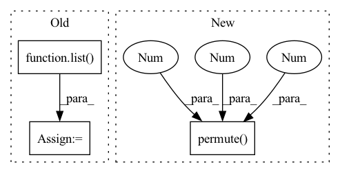

Pattern ID :2845

Before Change
input (batch_size, n_sources, *)
n_dims = input.dim()
dims = list(range(n_dims))
input_permuted = input.permute(1, 0, *dims[2:])
left, right = self.left, self.right
After Change
input_left, input_right = torch.abs(input_permuted[left]), torch.abs(input_permuted[right])
loss = - F.cosine_similarity(input_left, input_right, dim=2, eps=self.eps)
loss = loss.permute(1, 0, 2).contiguous() / self.n_combinations
loss = loss.sum(dim=2)
loss = loss.mean(dim=1)
In pattern: SUPERPATTERN
Frequency: 3
Non-data size: 3
Instances
Fragment ID: 15658094
Project Name: tky823/dnn-based_source_separation
Commit Name: 9ae9e0e761dbe8b27ced4dbd676bf9fdada629f9
Time: 2021-08-12
Author: 40362510+tky823@users.noreply.github.com
File Name: egs/musdb18/meta-tasnet/src/adhoc_criterion.py
M Class Name: MultiDissimilarityLoss
N Class Name: MultiDissimilarityLoss
M Method Name: forward(3)
N Method Name: forward(3)
M Parent Class: nn.Module
N Parent Class: nn.Module
M File Name: egs/musdb18/meta-tasnet/src/adhoc_criterion.py
N File Name: egs/musdb18/meta-tasnet/src/adhoc_criterion.py
M Start Line: 28
M End Line: 39
N Start Line: 51
N End Line: 60
'>
Before Change
quantizeds = list()
codes = list()
logits = list()
allCodewords = list()
// probability = mixin / (mixin + 1.0)
// rolloutDistribution = Bernoulli(probs=torch.tensor(probability).to(latents[0].device))
for xRaw, prob, squeeze, codebook, k in zip(latents, self._prob, self._squeeze, self._codebook, self._k):
n, c, h, w = xRaw.shape
After Change
// [n, c, h, w]
quantizeds.append(deTransformed)
codes.append(sample.argmax(-1).permute(1, 0).reshape(n, h, w))
logits.append(logit.permute(1, 0, 2).reshape(n, h, w, k))
return quantizeds, codes, logits
'>
Fragment ID: 15658124
Project Name: xiaosu-zhu/mcquic
Commit Name: 594ba7cd5c9d147e95ba5bd0b842270302dea2a2
Time: 2021-03-02
Author: xiaosu.zhu@outlook.com
File Name: src/mcqc/models/quantizer.py
M Class Name: TransformerQuantizer
N Class Name: TransformerQuantizer
M Method Name: forward(2)
N Method Name: forward(4)
M Parent Class: nn.Module
N Parent Class: nn.Module
M File Name: src/mcqc/models/quantizer.py
N File Name: src/mcqc/models/quantizer.py
M Start Line: 282
M End Line: 342
N Start Line: 295
N End Line: 320
'>
Before Change
def forward(self, latents, coeff, transform):
quantizeds = list()
codes = list()
logits = list()
for i, (xRaw, k) in enumerate(zip(latents, self._k)):
n, c, h, w = xRaw.shape
// [n, c, h, w] -> [h, w, n, c]
encoderIn = xRaw.permute(2, 3, 0, 1)
After Change
// [n, c, h, w]
quantizeds.append(deTransformed)
samples = [s.argmax(-1).permute(1, 0).reshape(n, h, w) for s in samples]
logits = [l.permute(1, 0, 2).reshape(n, h, w, k) for l in logits]
// codes.append(samples.argmax(-1).permute(1, 0).reshape(n, h, w))
// logits.append(logit.permute(1, 0, 2).reshape(n, h, w, k))
return quantizeds, codes, logits
'>
Fragment ID: 15658121
Project Name: xiaosu-zhu/mcquic
Commit Name: 36075d9c06641e76ffab1b363262368618d53912
Time: 2021-03-18
Author: xiaosu.zhu@outlook.com
File Name: src/mcqc/models/quantizer.py
M Class Name: TransformerQuantizer
N Class Name: TransformerQuantizer
M Method Name: forward(4)
N Method Name: forward(4)
M Parent Class: nn.Module
N Parent Class: nn.Module
M File Name: src/mcqc/models/quantizer.py
N File Name: src/mcqc/models/quantizer.py
M Start Line: 114
M End Line: 144
N Start Line: 147
N End Line: 162